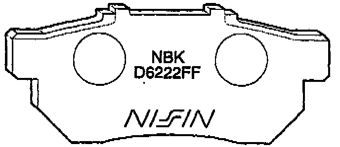
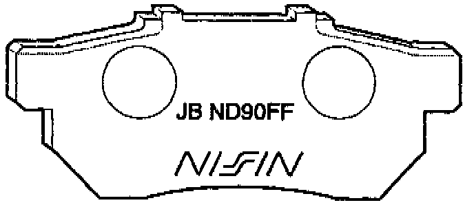

Rear Brakes - Pad Selection
August 1, 1995BULLETIN NO.
95-014
YEAR
1994-95
MODEL
INTEGRA
VIN APPLICATION
LS
GS-R
Rear Brake Pad Selection
SUBJECT
Replacement rear brake pads for the 1994-95 Integra LS and GS-R are available in two types: "low noise," and "longer life." When replacing rear brake pads, be sure to install the type that suits the individual owner's needs.

The original-equipment brake pads are "low noise." They are less likely to make noise, but they will not last as long. These brake pads have a manufacturer's identification number of D6222FF stamped on the back.

The optional replacement brake pads are "longer life." They have a longer service life, but may tend to squeal or squeak more when the brakes are applied lightly. These pads have a manufacturer's identification number of JB ND90FF stamped on the back.
To minimize the tendency for these pads to squeal or squeak, apply a thin coat of Molykote M77 (supplied) to the back sides of the brake pads and to both sides of the shim(s). Do not contaminate the friction material with Molykote.
PARTS INFORMATION
"Low noise" rear brake pad kit: P/N 43022-317-000
"Longer life" rear brake pad kit: P/N 43022-8R3-O10